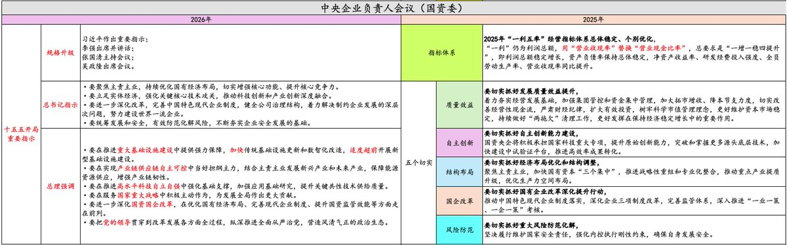

拱北靠北
@psyofsouthwest
@MacroMargin 不撞南墙不回头

宏观边际MacroMargin
@MacroMargin
面对十五五开局，今年的中央企业负责人会议，本该是国资委的年会，但罕见提级，感觉开成了誓师大会，大致两个方向：
一是大搞科技和产业，没啥好说的；
二是加力搞基建，明年投资的“止跌回稳”已是政治任务。
经济工作会议对投资定调“止跌回稳”，这是总书记特别关注的方向， https://t.co/sN2Sp3r0ca